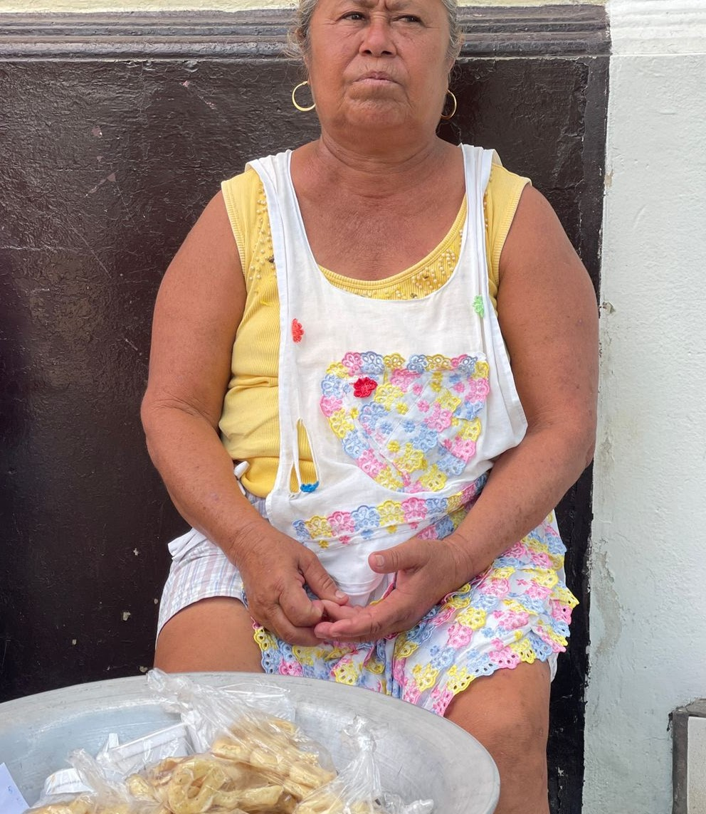
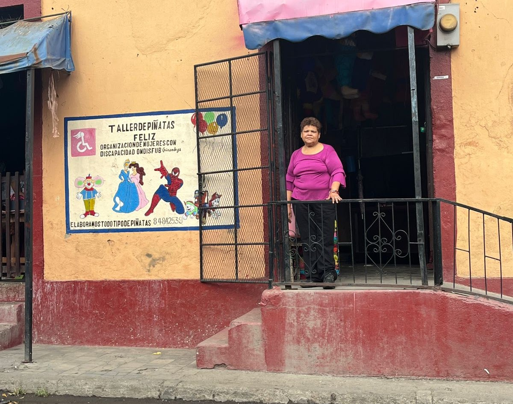
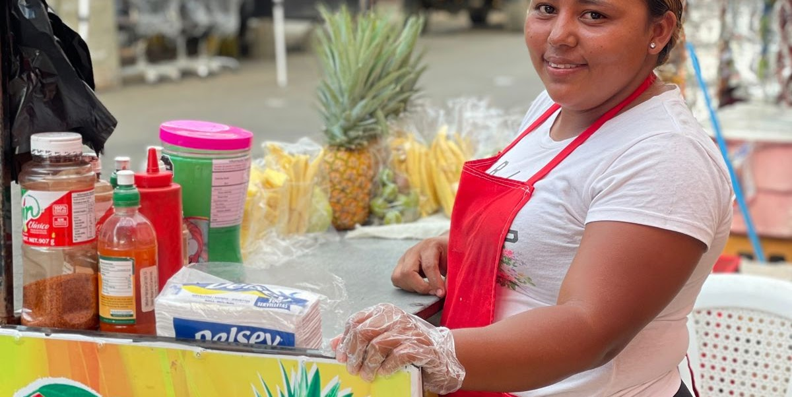
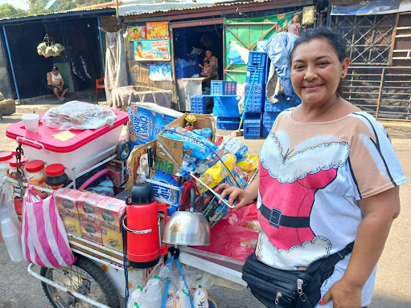
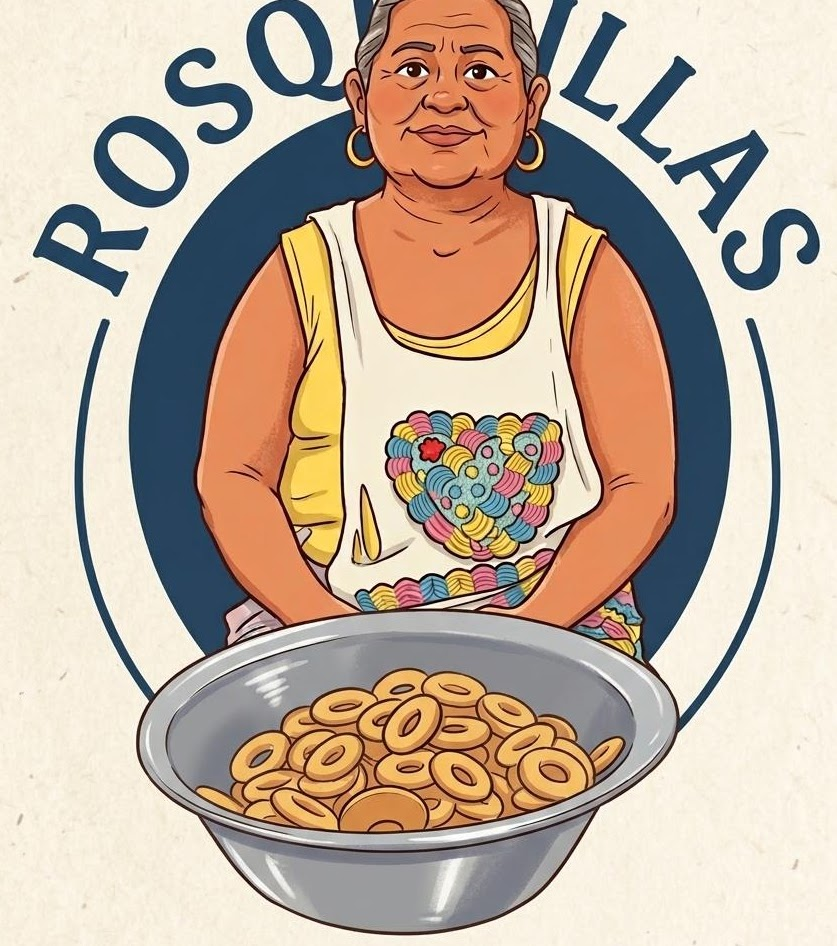
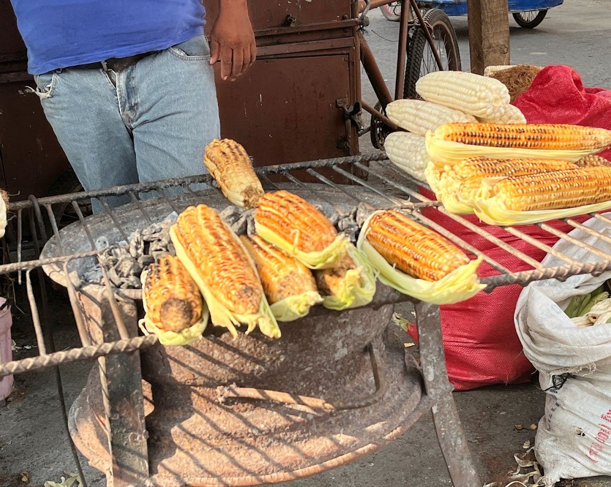
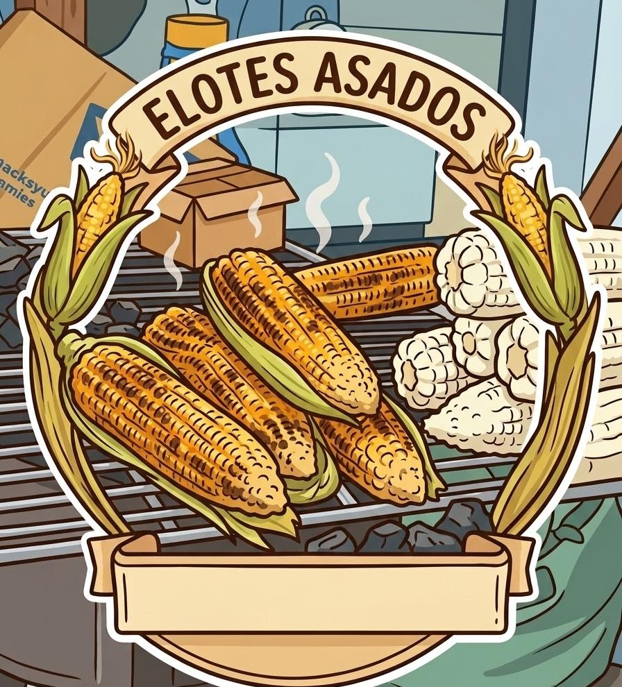
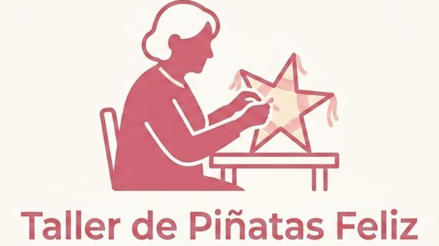
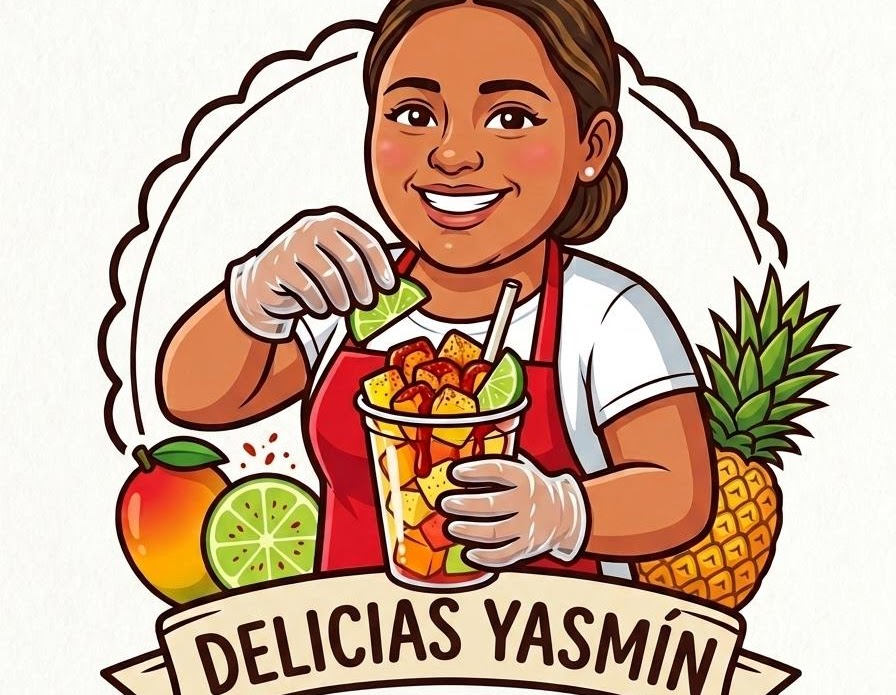
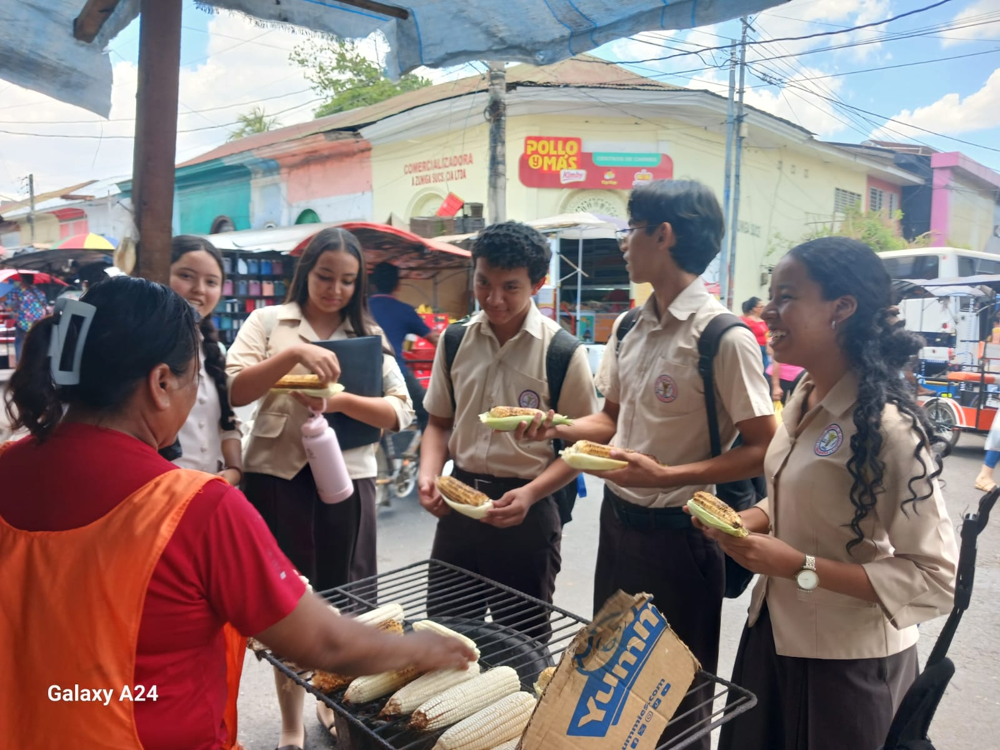

Historias que venden
Mujeres que sostienen a sus familias y fortalecen su comunidad con su trabajo diario.

Mujeres que sostienen a sus familias y fortalecen su comunidad con su trabajo diario.

Tradición, esfuerzo, inclusión y visión de futuro en cada historia.

Relatos de emprendimiento local, dignidad y esperanza.
Un punto de venta sostenido por memoria familiar, carisma y sabor local.

Décadas de trabajo diario entre el sol, la calle y la venta de alimentos.
Un taller nacido de mujeres con discapacidad que trabajan juntas por salir adelante.
Un puesto que sostiene a su familia con constancia, atención y esperanza.
Cuatro relatos de emprendimiento local en Chinandega, marcados por el trabajo constante, la memoria familiar, la organización comunitaria y el deseo de seguir avanzando.

Doña Silvia Franco es vendedora, un oficio que desempeña desde joven bajo la influencia de su abuela. Lleva aproximadamente nueve años trabajando en su negocio actual, que se ha convertido en un punto de referencia para habitantes de barrios como Guadalupe y El Calvario.
Su historia comenzó con la venta de tamales de elote, pero con el tiempo su camino evolucionó hacia las rosquillas. Esa transición conserva una raíz familiar y comunitaria: el trabajo aprendido, la atención cotidiana y el valor de ofrecer productos reconocidos por su sabor.
Silvia distribuye y vende productos elaborados en el taller de la señora Tamara Reyes, ubicado en El Viejo. Gracias a la calidad del producto y a su trato cercano, su negocio es una fuente de sustento y también un puente con la repostería tradicional nicaragüense.


La historia de Doña Patricia empieza en la infancia. Su madre le enseñó el oficio de las ventas cuando tenía siete años, en una época en la que el trabajo inmediato era una prioridad para la supervivencia familiar.
Lo que comenzó como una lección infantil se convirtió en una trayectoria de 45 años. Durante décadas ha sostenido su comercio con disciplina, presencia diaria y una relación directa con las personas que compran sus productos.
Su negocio expresa el desgaste invisible del comerciante: estar de pie, salir temprano, cuidar el producto y resistir el clima de la calle. Detrás de cada venta hay una historia de sacrificio, tradición familiar y constancia.

Doña Carolina Torrez forma parte de una organización de mujeres con discapacidad. El local central está en Chinandega, pero al contar con personería jurídica atienden a los 13 municipios del departamento.
Actualmente la organización reúne a 125 mujeres afiliadas. Como el espacio físico es pequeño, muchas trabajan desde sus casas y llevan las piñatas al local para su venta. Ese modelo permite que el esfuerzo colectivo siga activo aunque los recursos sean limitados.
La organización nació en 1992 por una necesidad social. En 1994, a través de un proyecto con un fraile llamado Guillermo y la organización INATEC, las fundadoras recibieron cursos de elaboración de piñatas y peluches. De esos cursos nació formalmente el taller, iniciando con un grupo de 12 compañeras con discapacidad.
Las ventas son variables: hay días en los que no se vende nada, pero se mantienen con esperanza y esfuerzo diario. Para ellas, vender dos piñatas o recibir un encargo al día ya representa una gran venta.

Yasmina Rivera vende productos variados, destacando principalmente las bolsitas de mango. En un día bueno llega a vender aproximadamente 30 bolsas, una meta que refleja la constancia de su trabajo diario.
Gracias a este puesto ha logrado mantener la economía de su familia y sus hijos, reinvirtiendo las ganancias para que el negocio siga funcionando. Su historia muestra cómo un pequeño punto de venta puede convertirse en apoyo esencial para un hogar.
En el futuro, Yasmina llegó a pensar en estudiar Enfermería. Comenta que no logró realizar esos estudios no por falta de apoyo de sus padres, sino por una decisión personal en aquel momento. Hoy se siente satisfecha de cómo su negocio le permite salir adelante.
Su experiencia representa el comercio local de Chinandega, donde la venta de frutas de temporada sostiene a muchas familias. “La necesidad le enseñó tanto que ahora el cansancio le parece normal”.
Este proyecto nace del encuentro entre estudiantes, comunidad y mujeres emprendedoras de Chinandega.

Historias que venden fue desarrollado por alumnos del Centro de Educación Mercantil de Occidente de Chinandega para reconocer el trabajo de mujeres emprendedoras de su comunidad.
ChinandegaEl proyecto une aprendizaje y observación de campo: escuchar, dialogar y valorar el comercio local que da vida a Chinandega.
Aprendizaje en campoLa mirada estudiantil presenta estos relatos con respeto, dignidad y esperanza.
Compromiso comunitarioConversemos sobre estas historias y su impacto.
Este espacio puede servir para compartir comentarios, proponer colaboraciones o dar seguimiento a iniciativas que fortalezcan el trabajo de las mujeres emprendedoras que aparecen en esta página.
UbicaciónChinandega, Nicaragua
EnfoqueHistorias reales, emprendimiento local y visibilización comunitaria.